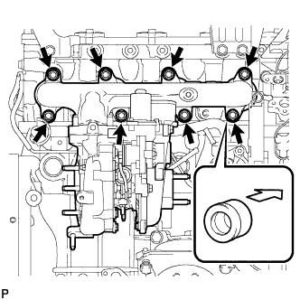
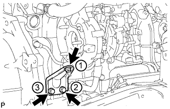
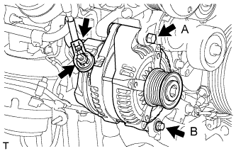
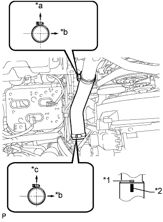

ВЫПУСКНОЙ КОЛЛЕКТОР С ТУРБОНАГНЕТАТЕЛЕМ (для моделей без DPF) > УСТАНОВКА |
| 1. УСТАНОВИТЕ ПАТРУБОК ОХЛАЖДАЮЩЕЙ ЖИДКОСТИ ТУРБИНЫ № 1 |
Установите патрубок охлаждающей жидкости турбины № 1 с новой прокладкой и закрепите его 2 гайками и болтом.
| 2. УСТАНОВИТЕ ВЫПУСКНОЙ КОЛЛЕКТОР С ТУРБОНАГНЕТАТЕЛЕМ В СБОРЕ |
Временно закрепите новую прокладку и турбонагнетатель 3 новыми гайками.
|  |
Установите новую прокладку на двигатель и закрепите выпускной коллектор с турбонагнетателем, 8 колец и 8 плоских шайб 8 новыми гайками.
Временно закрепите трубку подвода масла к турбине.
Закрепите новую прокладку и трубку подвода масла к турбине 2 гайками, но не затягивайте гайки.
Закрепите новую прокладку и трубку подвода масла к турбине 2 болтами, но не затягивайте болты.
Закрепите новую прокладку и трубку подвода масла к турбине пустотелым соединительным болтом-штуцером, но не затягивайте его.
| *1 | Новая прокладка | *2 | Захват |
| *a | Широкая часть | *b | Узкая часть |
 | Наружу | - | - |
Временно закрепите опору турбонагнетателя 2 болтами и гайкой.
Затяните 3 гайки турбонагнетателя.
Затяните 2 гайки A.
Затяните пустотелый соединительный болт-штуцер B.
Затяните 2 болта C.
|  |
Затяните 2 болта и гайку опоры турбонагнетателя в порядке, показанном на рисунке.
| 3. УСТАНОВИТЕ ВЫХОДНОЙ ПАТРУБОК ТУРБИНЫ |
Закрепите новую прокладку и выходной патрубок турбины 3 гайками.
| 4. ПОДСОЕДИНИТЕ ШЛАНГ ОХЛАЖДАЮЩЕЙ ЖИДКОСТИ ТУРБИНЫ № 1 |
Подсоедините шланг охлаждающей жидкости турбины № 1 к патрубку охлаждающей жидкости турбины № 1.
| 5. УСТАНОВИТЕ ТЕПЛОЗАЩИТНЫЙ ЭКРАН ВЫПУСКНОГО КОЛЛЕКТОРА № 1 |
Временно закрепите теплозащитный экран выпускного коллектора № 1 болтом.
| 6. УСТАНОВИТЕ ТЕПЛОЗАЩИТНЫЙ ЭКРАН ТУРБИНЫ № 1 |
Временно закрепите теплозащитный экран турбины № 1 2 болтами.
Затяните болт теплозащитного экрана выпускного коллектора № 1 и 2 болта теплозащитного экрана турбины № 1.
| 7. УСТАНОВИТЕ ВХОДНОЙ КОЛЕНЧАТЫЙ ПАТРУБОК КОМПРЕССОРА |
Закрепите новую прокладку и входной коленчатый патрубок компрессора 2 гайками.
Подсоедините шланг охлаждающей жидкости турбины № 2 и шланг охлаждающей жидкости турбины № 3.
Подсоедините 2 разъема и зажим жгута проводов.
Закрепите кронштейн жгута проводов болтом.
Установите 3 зажима жгута проводов.
| 8. УСТАНОВИТЕ ТРУБКУ ЩУПА ПРОВЕРКИ УРОВНЯ МАСЛА |
Установите новое кольцевое уплотнение на направляющую щупа проверки уровня моторного масла.
Нанесите тонкий слой чистого моторного масла на кольцевое уплотнение.
Закрепите трубку щупа проверки уровня моторного масла 2 болтами.
Установите щуп проверки уровня моторного масла.
| 9. УСТАНОВИТЕ ТРУБКУ ВЕНТИЛЯЦИИ КАРТЕРА |
Подсоедините 2 шланга вентиляции картера и закрепите трубку вентиляции картера болтом на крышке головки блока цилиндров.
| 10. УСТАНОВИТЕ КРОНШТЕЙН КОМПРЕССОРА № 1 |
Закрепите кронштейн крепления компрессора № 1 5 болтами.
| 11. УСТАНОВИТЕ КРОНШТЕЙН ГЕНЕРАТОРА |
Закрепите кронштейн генератора болтами.
| 12. УСТАНОВИТЕ ГЕНЕРАТОР В СБОРЕ |
|  |
Установите генератор и закрепите его 2 болтами.
Подсоедините провод генератора и закрепите его гайкой.
Установите заглушку контакта.
Подсоедините разъем генератора.
| 13. ПОДСОЕДИНИТЕ КОМПРЕССОР СИСТЕМЫ КОНДИЦИОНИРОВАНИЯ В СБОРЕ (для моделей с системой кондиционирования) |
Подсоедините компрессор системы кондиционирования с помощью 4 болтов.
Подсоедините разъем компрессора.
| 14. УСТАНОВИТЕ КРОНШТЕЙН ВЯЗКОСТНОГО ПОДОГРЕВАТЕЛЯ № 1 В СБОРЕ (для автомобилей, предназначенных для эксплуатации в холодном климате) |
Закрепите кронштейн вязкостного подогревателя № 1 4 болтами.
| 15. УСТАНОВИТЕ ВЯЗКОСТНЫЙ ПОДОГРЕВАТЕЛЬ С ЭЛЕКТРОМАГНИТНОЙ МУФТОЙ В СБОРЕ (для автомобилей, предназначенных для эксплуатации в холодном климате) |
Установите вязкостный подогреватель с электромагнитной муфтой и закрепите его 2 болтами.
Подсоедините перепускной шланг охлаждающей жидкости и шланг охлаждающей жидкости.
Подсоедините разъем вязкостного подогревателя.
| 16. УСТАНОВИТЕ ВЫХОДНОЙ ПАТРУБОК КОМПРЕССОРА |
Закрепите выходной коленчатый патрубок компрессора 2 болтами и затяните зажим шланга.
Закрепите кронштейн жгута проводов болтом.
Установите 3 зажима жгута проводов.
| 17. УСТАНОВИТЕ ВОЗДУШНЫЙ ШЛАНГ № 1 |
|  |
Совместите нанесенную краской метку на воздушном шланге промежуточного охладителя с рельефной меткой на промежуточном охладителе.
| *1 | Рельефная метка |
| *2 | Метка, нанесенная краской |
| *a | Задняя сторона автомобиля |
| *b | Левая сторона |
| *c | Верх |
Затяните 2 зажима.
| 18. УСТАНОВИТЕ КОРПУС ВОЗДУШНОГО ФИЛЬТРА В СБОРЕ |
Установите корпус воздушного фильтра и закрепите его 3 болтами.
| 19. УСТАНОВИТЕ ФИЛЬТРУЮЩИЙ ЭЛЕМЕНТ ВОЗДУШНОГО ФИЛЬТРА В СБОРЕ |
| 20. УСТАНОВИТЕ КРЫШКУ ВОЗДУШНОГО ФИЛЬТРА В СБОРЕ |
Присоедините 4 зажима, чтобы закрепить крышку воздушного фильтра.
За исключением моделей, предназначенных для эксплуатации в холодном климате:
Подсоедините разъем датчика массового расхода воздуха и закрепите его 2 зажимами.
Для автомобилей, предназначенных для эксплуатации в холодном климате:
Подсоедините разъем датчика массового расхода воздуха и закрепите его 3 зажимами.
| 21. УСТАНОВИТЕ ШЛАНГ ВОЗДУШНОГО ФИЛЬТРА № 1 |
| *1 | Шланг воздушного фильтра № 1 | *2 | Входной коленчатый патрубок компрессора |
| *3 | Крышка воздушного фильтра | *4 | Выступы |
| *5 | Канавка | - | - |
| *a | Верхняя сторона | *b | Передняя сторона автомобиля |
Установите шланг воздушного фильтра №1.
Затяните 2 шланговых хомута.
| 22. УСТАНОВИТЕ ПОЛИКЛИНОВОЙ РЕМЕНЬ ВЕНТИЛЯТОРА И ГЕНЕРАТОРА |
Поверните шкив натяжителя по часовой стрелке с помощью установочного болта шкива, а затем установите поликлиновой ремень.

| *1 | Шкив коленчатого вала | *2 | Шкив вентилятора |
| *3 | Генератор | *4 | Опорный шкив № 2 |
| *5 | Опорный шкив № 3 | *6 | Компрессор системы кондиционирования |
| *7 | Вязкостный подогреватель | - | - |
| *a | Тип A | *b | Тип C |
| *c | Тип B | *d | Тип D |
 |
Удостоверьтесь, что индикаторная метка натяжителя располагается в зоне A, как показано на рисунке.
| 23. УСТАНОВИТЕ ПЕРЕДНИЙ КРОНШТЕЙН ОТОПИТЕЛЯ (для автомобилей, предназначенных для эксплуатации в холодном климате) |
Установите передний кронштейн подогревателя и закрепите его 2 болтами.
| 24. УСТАНОВИТЕ ВЕРХНЕЕ УПЛОТНЕНИЕ КРОНШТЕЙНА РАДИАТОРА |
Установите верхнее уплотнение кронштейна радиатора и закрепите его 13 фиксаторами.
| 25. УСТАНОВИТЕ УПЛОТНЕНИЕ № 1 МЕЖДУ ФАРТУКОМ ПРАВОГО ПЕРЕДНЕГО КРЫЛА И РАМОЙ |
Закрепите 5 фиксаторами уплотнение № 1 между фартуком правого переднего крыла и рамой.
| 26. УСТАНОВИТЕ УПЛОТНЕНИЕ ФАРТУКА ПРАВОГО ПЕРЕДНЕГО КРЫЛА |
Закрепите 4 фиксаторами заднее уплотнение фартука правого переднего крыла.
| 27. УСТАНОВИТЕ ПРИЕМНУЮ ТРУБУ В СБОРЕ |
Закрепите приемную трубу с новой прокладкой на выпускном коллекторе с помощью 3 новых гаек.
| 28. ПОДСОЕДИНИТЕ ПРОВОД К ОТРИЦАТЕЛЬНОМУ ВЫВОДУ АККУМУЛЯТОРНОЙ БАТАРЕИ |
| 29. ДОБАВЬТЕ ОХЛАЖДАЮЩУЮ ЖИДКОСТЬ ДВИГАТЕЛЯ |
Затяните пробку сливного крана радиатора вручную.
Затяните пробку сливного крана блока цилиндров.
Заполните радиатор охлаждающей жидкостью с увеличенным сроком замены "Super Long Life Coolant (SLLC)" от компании Тойота, залив ее в трубопровод B расширительного бачка.
| Параметр / Устройство | Заданные условия | |
| для моделей с автоматической трансмиссией | Для моделей с задним подогревателем | 14,9 литра (15,7 кварты США, 13,1 английской кварты) |
| Для моделей без заднего подогревателя | 13,1 литра (13,8 кварты США, 11,5 английской кварты) | |
| для моделей с механической трансмиссией | Для моделей с задним подогревателем | 15,0 литра (15,8 кварты США, 13,2 английской кварты) |
| Для моделей без заднего подогревателя | 13,2 литра (13,9 кварты США, 11,6 английской кварты) | |
Несколько раз сожмите рукой входной и выходной патрубки радиатора, затем проверьте уровень охлаждающей жидкости.
Если уровень охлаждающей жидкости опускается ниже линии В, долейте охлаждающую жидкость SLLC Toyota до линии В.
Установите пробку расширительного бачка радиатора.
Установите вентиляционную пробку с помощью гаечного ключа.
Выпустите воздух из системы охлаждения.
Прогревайте двигатель, пока не откроется термостат. Когда термостат откроется, несколько минут прокачивайте охлаждающую жидкость.
Поддерживайте частоту вращения коленчатого вала двигателя на уровне 2500–3000 об/мин.
Несколько раз сожмите рукой входной и выходной патрубки радиатора, чтобы удалить воздух.
Остановите двигатель и подождите, пока охлаждающая жидкость остынет до температуры окружающего воздуха.
Когда охлаждающая жидкость остынет, убедитесь, что она находится на уровне отметки FULL.
Если уровень охлаждающей жидкости ниже отметки FULL, долейте SLLC от компании Тойота до этой отметки.
| 30. ПРОВЕРЬТЕ, НЕТ ЛИ УТЕЧЕК ОХЛАЖДАЮЩЕЙ ЖИДКОСТИ |
Заполните радиатор охлаждающей жидкостью и подсоедините приспособление для опрессовки системы охлаждения и проверки пробки радиатора.
Прогрейте двигатель.
С помощью приспособления для опрессовки системы охлаждения и проверки пробки радиатора увеличьте давление в радиаторе до 123 кПа (1,3 кгс/см2, 18 фунтов на кв. дюйм) и убедитесь, что давление не падает.
Если давление снижается, проверьте на наличие утечек шланги, радиатор и насос системы охлаждения. При отсутствии внешних утечек проверьте сердцевину нагревателя, блок цилиндров и головку.
| 31. ПРОВЕРЬТЕ, НЕТ ЛИ УТЕЧЕК МАСЛА |
Запустите двигатель. Убедитесь, что в узлах, в которых выполнялись работы, нет утечек масла.
| 32. ПРОВЕРЬТЕ, НЕТ ЛИ УТЕЧЕК ОТРАБОТАВШИХ ГАЗОВ |
| 33. УСТАНОВИТЕ ЗАЩИТУ КАРТЕРА ДВИГАТЕЛЯ № 1 В СБОРЕ |
Установите защиту картера двигателя № 1 и закрепите ее 4 болтами.
| 34. УСТАНОВИТЕ НИЖНЮЮ ОБЛИЦОВКУ ПЕРЕДНЕГО БАМПЕРА |
Установите нижнюю накладку переднего бампера и закрепите ее фиксатором и 5 болтами.